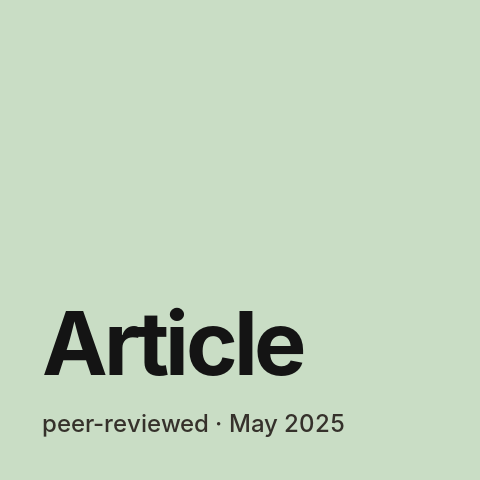
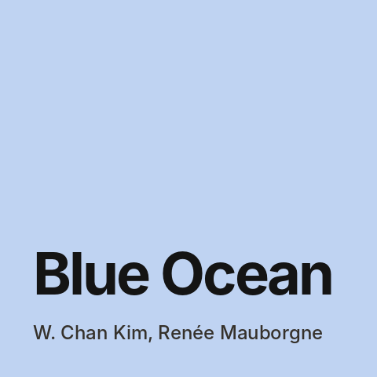
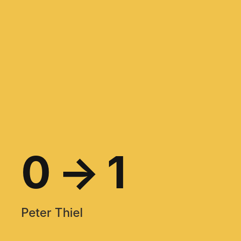
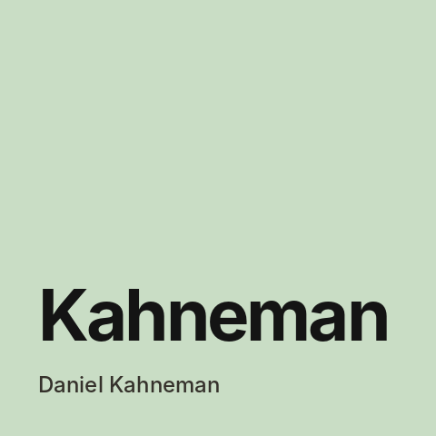

Posts — page 2
- bolz.dev — an MCP connector that lets AI agents take real-world actions In August 2025 we built the MVP of bolz.dev — a Model Context Protocol platform that lets AI agents not just recommend but finish the job: find, book and pay for real services.
-

My first peer-reviewed article — how Russian companies use AI in management My first academic article was published — "Specific features of artificial intelligence use in the management of Russian companies" in the journal "Economics and Management: Problems, Solutions" (2025, vol. 7, no. 6). -

Blue Ocean Strategy by Kim and Mauborgne: how to escape competition Key ideas from the book about not fighting competitors over an existing market but creating new market space where there is no competition yet. -
 What an independent assessment of product managers at MTS showed
In April 2022 MTS ran an independent assessment of its product managers; the testing was done by Assessty. At the time I was developing MTS ID — the single sign-on for MTS products.
What an independent assessment of product managers at MTS showed
In April 2022 MTS ran an independent assessment of its product managers; the testing was done by Assessty. At the time I was developing MTS ID — the single sign-on for MTS products. -

Zero to One by Peter Thiel: how to build something truly new Key ideas from the PayPal co-founder's book on startups: why copying doesn't create the future, why aim for a monopoly, and which questions to ask yourself before starting. -

Thinking, Fast and Slow by Daniel Kahneman: how we get decisions wrong Key ideas from the Nobel laureate's book on the two systems of thinking and the systematic errors everyone makes — including in product decisions. -
 My HSE master's thesis — how to tell whether digital transformation will pay off
My master's thesis in the Corporate Finance programme at HSE University's Faculty of Economic Sciences was "Modelling and evaluating the efficiency of a company's digital transformation investment projects". It started the research line I now continue in my PhD at RANEPA — this time about AI.
My HSE master's thesis — how to tell whether digital transformation will pay off
My master's thesis in the Corporate Finance programme at HSE University's Faculty of Economic Sciences was "Modelling and evaluating the efficiency of a company's digital transformation investment projects". It started the research line I now continue in my PhD at RANEPA — this time about AI. -
 Hooked by Nir Eyal: how products become habits
Key ideas from the book about products people use out of habit, without ads or reminders: the four steps a habit is built from, and where the line with manipulation lies.
Hooked by Nir Eyal: how products become habits
Key ideas from the book about products people use out of habit, without ads or reminders: the four steps a habit is built from, and where the line with manipulation lies. - The Goal by Eliyahu Goldratt: the theory of constraints as a novel Key ideas from a business novel about a plant manager who has three months to save his factory — and about the theory of constraints, which has since been applied far beyond factories.
- The Innovator's Dilemma by Clayton Christensen: why strong companies lose to newcomers Key ideas from the book on disruptive innovation: why well-managed companies that do everything right lose their market to simpler, cheaper products.